As funções nitrogenadas são um grupo de compostos orgânicos que possuem átomos de nitrogênio unidos à cadeia carbônica. Diferenciam-se pelos respectivos grupos funcionais, que são conjuntos de átomos ligados em determinada configuração e que definem as propriedades características de cada função.
Saiba maisAs funções sulfuradas são compostos orgânicos que contêm átomos de enxofre em suas estruturas. O enxofre, um elemento do grupo 16 da tabela periódica, possui características semelhantes ao oxigênio, mas com propriedades distintas que influenciam o comportamento dos compostos que o contêm.
Saiba maisAminas são compostos orgânicos nitrogenados que derivam da substância amônia (NH3) pela substituição de um ou mais hidrogênios por radicais orgânicos. De acordo com a quantidade de hidrogênios substituídos, as aminas podem ser classificadas em:
Amina primária: formada pela substituição de um hidrogênio da amônia por um radical orgânico
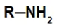
Amina secundária: formada pela substituição de dois hidrogênios da amônia por dois radicais orgânicos.
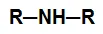
Amina terciária: formada pela substituição dos três hidrogênios da amônia por três radicais orgânicos.
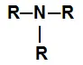
Para fornecer o nome a uma amina, basta seguir a regra estabelecida pela União Internacional da Química Pura e Aplicada (IUPAC), descrita a seguir:
Nome do radical ou radicais + amina
Observação: Se a amina tiver radicais diferentes, devemos seguir a ordem alfabética.
Exemplo 1: Amina primária
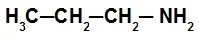
Na amina primária desse exemplo, temos a presença de uma radical propil, assim, o seu nome é propilamina.
Exemplo 2: Amina secundária
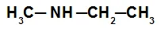
Na amina secundária desse exemplo, temos a presença do radical metil (à esquerda do nitrogênio) e do radical etil (à direita do nitrogênio). O seu nome é, seguindo a ordem alfabética, etil-metilamina.
Exemplo 3: Amina terciária
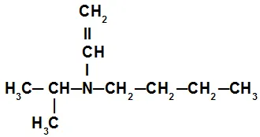
Na amina terciária desse exemplo, temos a presença do radical isopropil (à esquerda do nitrogênio), do radical butil (à direita do nitrogênio) e do radical vinil (abaixo do nitrogênio). O seu nome é, portanto, butil-isopropil-vinilamina.
Amidas são compostos orgânicos nitrogenados que apresentam como principal característica a presença de um grupo carbonila (carbono que realiza uma ligação dupla com o oxigênio), ligado diretamente a um nitrogênio, que, por sua vez, pode ligar-se a dois átomos de hidrogênio, são classificadas em:
Amida simples: É a amida que apresenta dois hidrogênios ligados ao nitrogênio do grupo funcional.
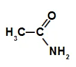
Amida monossubstituída: É a amida que apresenta apenas um hidrogênio ligado ao nitrogênio do grupo funcional, já que o outro foi substituído por radical orgânico.
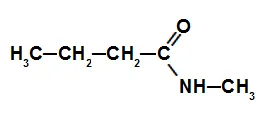
Amida dissubstituída: É a amida que não apresenta nenhum hidrogênio ligado ao nitrogênio do grupo funcional, já que todos eles foram substituídos por radicais orgânicos.
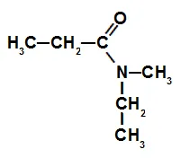
Amidas primárias: apenas um grupo acila ligado ao nitrogênio (R-CO)NH2 .
Amidas secundárias: duas carbonilas ou grupo acila ligado ao nitrogênio (R-CO)2NH.
Amidas terciárias: três grupos acilas ligados ao nitrogênio (R-CO)3N.
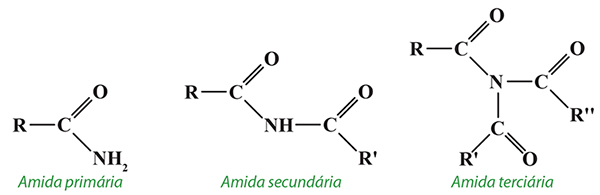
A regra de nomenclatura IUPAC que deve ser utilizada para uma amida é:
Prefixo + Infixo + amida
Prefixo: sempre está relacionado à quantidade de carbonos presentes na cadeia
Infixo: sempre relacionado ao tipo de ligações existentes entre os átomos de carbono da cadeia.
Exemplo 1: Amida simples
É a amida que apresenta dois hidrogênios ligados ao nitrogênio do grupo funcional.
Exemplo 2: Amida ramificada
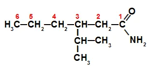
Como a amida é ramificada, é fundamental determinar sua cadeia principal (com maior número de carbonos a partir do grupo funcional), a qual está numerada acima. Nesse caso, a cadeia principal tem 6 carbonos (prefixo hex), apenas ligações simples (infixo an) entre os carbonos e um radical isopropil no carbono 3. O nome dessa amida é, portanto, 3-isopropil-hexanamida.
Em amidas monossubstituída ou dissubstituída, a posição da ramificação será sempre indicada por N, já que o radical está ligado diretamente ao nitrogênio. Se na cadeia existir outro radial, será escrito após a indicação do radical do N.
Exemplo 3: Amida substituída
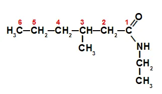
Como essa amida, além de substituída, é ramificada, é fundamental determinar sua cadeia principal. Assim, temos uma cadeia principal com 6 carbonos (prefixo hex), apenas ligações simples (infixo an) entre os carbonos, um radical metil no carbono 3 e um radical etil no nitrogênio. Dessa forma, o nome dessa amida é N-etil-3-metil-hexanamida.
As nitrilas, também denominadas cianetos, são uma classe de compostos orgânicos em que seu grupo funcional (-C≡N) é obtido substituindo-se o hidrogênio do gás cianídrico (HCN - daí o nome cianeto) por algum radical orgânico. O próprio gás cianídrico é considerado uma nitrila.
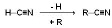
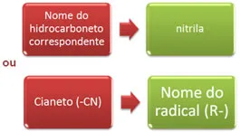
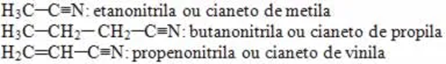
Nitrocomposto é um composto orgânico derivado da reação química entre o ácido nítrico (HNO3) e um alcano (hidrocarboneto saturado de cadeia aberta) ou um aromático. Quando o ácido nítrico reage com o alcano ou o aromático, ocorre uma reação de substituição na qual o ácido perde um grupo hidroxila (OH), e o composto orgânico perde um hidrogênio:
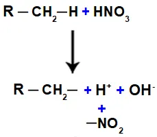
Em seguida, temos a formação de uma molécula de água, resultante da união entre o OH e o H, enquanto o grupo NO2 (que restou do ácido) liga-se no alcano ou no aromático, formando o nitrocomposto.
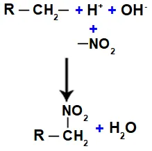
Assim, a principal característica estrutural de um nitrocomposto é a presença de um ou mais grupos nitro (NO2) ligados a um alcano ou a um aromático.
A regra de nomenclatura oficial, proposta pela IUPAC (União Internacional da Química Pura e Aplicada), para os nitrocompostos é:
Nitro + prefixo + infixo + o
Observação: O prefixo está relacionado com o número de carbonos presentes na cadeia do nitrocomposto. O infixo está relacionado com o tipo de ligações presentes entre os carbonos.
Nomenclatura de um nitrocomposto de cadeia normal
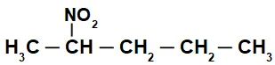
Inicialmente, é interessante numerar a cadeia do nitrocomposto (sempre a partir do carbono mais próximo do carbono que apresenta o grupo nitro):
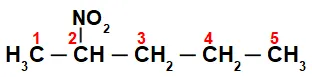
Ao numerar a cadeia do nitrocomposto, temos que nela há cinco átomos de carbono (prefixo pent), apenas ligações simples entre os carbonos (infixo an) e o grupo nitro no carbono 2. O nome dessa estrutura é 2-nitropentano.
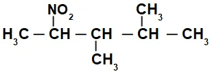
Inicialmente, é interessante numerar a cadeia do nitrocomposto (sempre a partir do carbono mais próximo do carbono que apresenta o grupo nitro) seguindo até a extremidade que apresenta um maior número de carbonos para a cadeia principal:
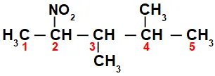
Ao numerar a cadeia do nitrocomposto, temos que nela há 5 átomos de carbono (prefixo pent), apenas ligações simples entre os carbonos (infixo an), dois radicais metil (nos carbonos de número 3 e 4) e o grupo nitro no carbono 2. O nome dessa estrutura é 3,4-dimetil-2-nitropentano.
Os nitrocompostos, de forma geral, podem ser utilizados na fabricação de agrotóxicos, corantes, anilina, bactericidas, fungicidas, aditivos, solventes; atuam também como explosivos e no refino do petróleo.
Os isonitrilos são muito utilizados em diversas sínteses orgânicas (produção de novas substâncias orgânicas) e na fabricação de pesticidas e agrotóxicos. Esses compostos são originados quando o ácido isocianídrico reage com um álcool, por exemplo. Nessa reação ocorre a substituição do átomo de hidrogênio do ácido pelo radical do álcool. O hidrogênio une-se à hidroxila do álcool e forma uma molécula de água.
O ácido isocianídrico que dá origem aos isonitrilos apresenta a seguinte fórmula estrutural:
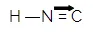
Entre o átomo de carbono e o átomo de nitrogênio, há uma ligação dupla e uma ligação dativa. Essa região do isonitrilo é extremamente polar em razão do fenômeno de ressonância entre os elétrons da ligação dupla e os elétrons da ligação dativa.
Em virtude do efeito de ressonância entre o átomo de carbono e o de nitrogênio, os isonitrilos apresentam uma menor estabilidade em relação aos nitrilos, ou seja, eles podem decompor-se (transformarem-se em outra substância) facilmente. Assim, quando um isonitrilo sofre um aquecimento, ele se converte facilmente em um nitrilo.
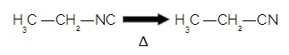
Para realizar a nomenclatura de um isonitrilo, a regra da IUPAC (União Internacional da Química Pura e Aplicada) é a seguinte:
Nome da ramificação + carbilamina
Observação: O nome carbilamina refere-se ao grupo NC. Assim, todo o grupo ligado ao NC é considerado um radical na nomenclatura.
Exemplo 1: Etilcarbilamina, Isonitrilo com o radical etil
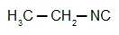
Exemplo 2: Vinilcarbilamina, Isonitrilo com o radical vinil
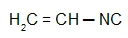
Isocianeto + de + nome do radical + a
Exemplo 1: Isocianeto de etila, Isonitrilo com o radical etil
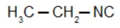
Exemplo 2: Isocianeto de Vinila, Isonitrilo com o radical vinil
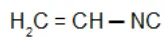
O isocianato é utilizado na indústria de construção para a fabricação de espumas de poliuretano utilizadas como isolantes térmicos e acústicos em paredes, telhados e pisos.
São semelhantes ao grupo funcional dos álcoois — compostos que possuem o grupo OH ligado a um carbono saturado (que realiza somente ligações simples). De modo similar, os tióis possuem o enxofre (S) no lugar do oxigênio dos álcoois, ou seja, possuem o grupo SH ligado a um carbono saturado.
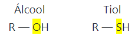
A nomenclatura dos tióis é realizada de forma semelhante à nomenclatura dos álcoois, mudando-se somente o sufixo “ol” por “tiol”.
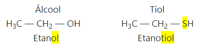
Um exemplo de tiol importante é o butan-1-tiol que é adicionado ao gás de cozinha. O gás de cozinha é fundamentalmente formado pelos gases butano e propano, que não possuem cheiro. A presença do butan-1-tiol faz com que se sinta o cheiro quando há algum vazamento de gás, o que evita a ocorrência de acidentes.
São semelhantes ao grupo funcional dos éteres — compostos que possuem o oxigênio entre dois carbonos. O mesmo se dá com o enxofre no caso dos tioéteres.
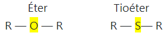
Os tioéteres também são conhecidos como sulfetos. Se esses compostos forem submetidos a uma oxidação branda, eles transformar-se-ão em dissulfetos: R — S — S — R. Estes possuem grande importância biológica porque a ponte — S — S — une as longas moléculas de proteínas entre si.
A nomenclatura dos tioéteres segue a seguinte regra:
sulfeto de + nome do radical + nome do radical + a
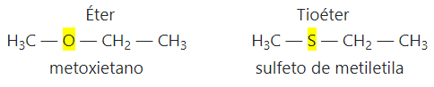
Um tioéter importante é o 2-cloroetilsulfanil-2-cloroetano, mais conhecido como gás mostarda. Sua fórmula é dada por:
O gás mostarda tem esse nome porque possui um cheiro semelhante a alho com mostarda. Ele é extremamente tóxico, pode causar cegueira, edema pulmonar, lesões na pele e asfixia. Por isso, foi muito usado em guerras. Isso acontece porque ele reage com a água presente na umidade do ar ou no organismo e libera HCl. Esse produto é o responsável pela irritação na pele, nos olhos e no sistema respiratório que a pessoa sente quando é atingida por esse gás.